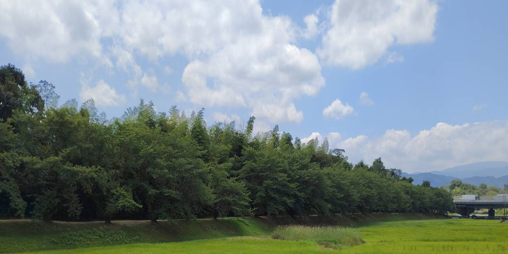

歴史を歩くと、一つの答えにたどり着くこともあれば、新しい疑問が生まれることもあります。
このページでは、『The Saga Log』で紹介した史跡や物語について、
調査の過程で見つけた資料や史料、考察などをまとめています。
本文では書ききれなかったこと、まだ結論の出ていないこと、そしてこれから調べてみたいこと―。
そんな「歴史の欠片」を集める、小さな調査ノートです。
歴史は、新しい発見によって少しずつ姿を変えていきます。
このノートもまた、歩みを続けながら少しずつ書き加えていこうと思います。
『日本書紀』には、水城について「大堤を築き、水を貯えしむ」と記されている。
長い間、この記述は文献だけの話と思われていた。
しかし昭和の発掘調査によって、博多側から幅約60メートルにも及ぶ巨大な外堀跡が見つかり、
この記述が史実だったことが明らかになった。
水城は、確かに「水を貯える」施設でもあったのである。
現地を歩くと、一つの疑問が浮かぶ。
水源となるのは御笠川上流。
現在見る限り、大河川とは言えない。
仮に外堀全体が,
長さ 約1,200m 幅 約60m 深さ 約4m だったとすると、
必要な水量は, 約288,000㎥になる。
これは25メートルプール 約576杯分にも相当する。
しかも水は、
蒸発する
地中へ浸透する
洪水で流れる
これほどの水を、常に満水で維持することは本当に可能だったのだろうか。
発掘調査では、土塁の内部から幅約1.2メートルにも及ぶ巨大な木樋が発見されている。
これは単なる排水施設ではなく、
内側から外堀へ水を導く導水施設だったと考えられている。
さらに、お堀をいくつかの区画に分け、水位を管理していた可能性も指摘されている。
もしそうなら、水城は巨大な土塁ではなく、
古代日本最大級の水利システムだったことになる。
ここで大切なのは、
「だから満水だった」
とも、
「だから無理だった」
とも言い切れないことである。
考古学は遺構を教えてくれる。
しかし実際にどれほどの水を、どのように管理していたかまでは、
まだ完全には分かっていない。
私は現地で御笠川を見ながら、
「本当にこの細い流れだけだったのだろうか」
と何度も立ち止まった。
もしかすると、古代の技術者たちは私たちがまだ気付いていない工夫をしていたのかもしれない。
あるいは、私たちが思い描くような「巨大な湖」のような外堀ではなかったのかもしれない。
あくまで、私的な考察だが、満水でなくても、『水を貯える』という記述が、
心理的な抑止力になっていたのではないだろうか。
水城には、まだ解かれていない「水」の謎が残されている。
だから私は、またこの場所へ来ようと思う。
歴史の風は、きっともう少しだけ答えを教えてくれる気がするからだ。
・『日本書紀』
天智天皇の御代、水城築造の経緯を伝える最古の文献。
・太宰府市教育委員会・文化財関連資料
発掘調査により判明した「外堀の幅（約60m）」や「導水施設（木樋）」
の構造的特徴に関する報告。
・現地踏査記録
御笠川の水量および周辺地形から導き出した、現場視点での考察メモ。
白村江の敗戦後、九州防衛のため、多くの人々が筑紫へ集められた。
防人として選ばれた人々の多くは、相模・武蔵・上総・下総・常陸など東国の出身である。
彼らは船や馬ではなく、自らの足で都を経て、遠く筑紫まで歩いて向かった。
その道のりは、およそ一五〇〇キロにも及んだと考えられている。
東国の人々にとって、この移動は帰還の保証なき旅でもあった。
『万葉集』巻二十には、防人や家族の歌が数多く収められている。
「父母が 頭かき撫で 幸くあれて
言ひし言葉ぞ 心にかかる」
両親に「どうか無事で」と頭を撫でられた旅立ちの日。
その言葉だけが、筑紫への長い道のりで何度も思い出されたのである。
水城はわずか一年ほどで完成したとされる。
しかし、それで人々の役目が終わったわけではない。
防人の任期は約三年とされていた。その後も大野城や基肄城などの築城、
さらに水城の補修や警備のため、多くの人々が筑紫へ送られ続けた。
防人や兵士による防衛体制は奈良時代まで続いていく。
父子嶋の伝承では、完成の声を聞いた父子が、その場へへなへなと座り込んだという。
私はその姿を笑い話とは思えなかった。
東国から何か月も歩き続け、故郷を離れ、
ようやく終わったと思っても、また次の工事や警備が待っている。
この土塁には、そんな名も残らない人々の汗と人生が積み重なっているように思えてならない。
・『万葉集』（巻二十：防人歌）
東国から徴発された防人たちが、
筑紫へ向かう道中や赴任先で詠んだ悲哀に満ちた歌群。
・『日本書紀』
白村江の戦い以降の軍事施設（水城、大野城、基肄城など）築造に関する記録。
・現地伝承・民話（父子嶋など）
築城に携わった人々の過酷な労働と、その達成の瞬間を伝える各地の伝承。
・『大宝律令』・『養老律令』（軍防令）
防人の任期が「三年」と定められていたことを記す律令の根拠。
・『続日本紀』
防人の徴発、交代規定、帰国時の食料支給など、具体的な運用に関する記録。